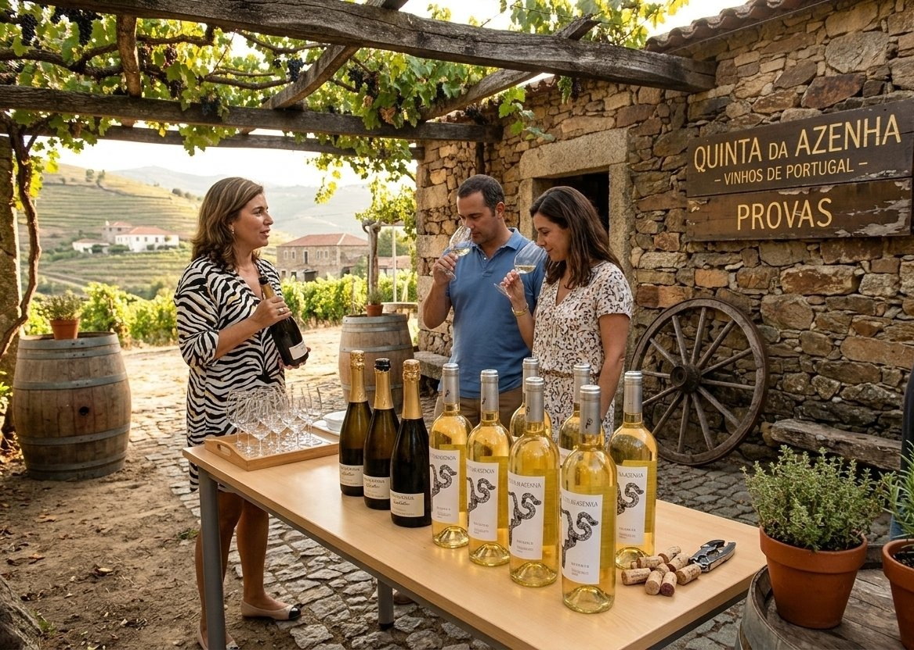

Descobrir Bucelas
O Solo
Os solos argilo-calcários de Bucelas conferem aos vinhos uma mineralidade única - aquela frescura que persiste depois de engolir.
O Clima
Invernos frios e verões ventosos. A influência do Atlântico, a 30km, traz frescura às noites - o segredo para a acidez viva dos nossos brancos.
O Arinto
A casta rainha de Bucelas. O Arinto aqui produz vinhos que envelhecem décadas sem perder frescura - uma raridade num mundo de vinhos para beber jovens.
Quinta da Azenha
A Quinta da Azenha está localizada no coração de Bucelas e estende-se por uma área de 45 hectares, caracterizados por solos argilo-calcários únicos. A propriedade possui 37 hectares de vinhas, incluindo vinhas velhas com mais de 50 anos.
O nome "Azenha" - a antiga roda de pedra que moía o grão - é a memória viva de gerações que trabalharam esta terra. Hoje, esse mesmo engenho move a nossa paixão pelo vinho.
45ha
Área Total37ha
Vinhas+50
Anos Vinhas Velhas
Perguntas Frequentes
Estamos abertos de terça a domingo, das 10h às 18h. Recomendamos reserva prévia para garantir disponibilidade.
Sim. Para garantir disponibilidade e uma experiência personalizada, pedimos que reserve com pelo menos 48 horas de antecedência.
Sim! Temos experiências especiais para grupos de 10 ou mais pessoas. Contacte-nos para um programa personalizado.
Estamos em Bucelas, a 25km de Lisboa. Fácil acesso pela A1 (saída Bucelas) ou A8. Enviaremos instruções com a confirmação da reserva.
Sim! Os nossos vinhos estão disponíveis exclusivamente na quinta, durante as visitas. Não vendemos online - cada garrafa merece ser descoberta pessoalmente.
Pronto para nos Visitar?
Reserve a sua experiência e descubra porque Bucelas é a região de vinho branco mais especial de Portugal.
Fazer Reserva Ver os Vinhos